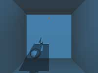
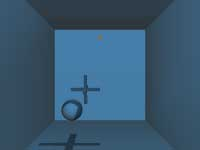

|
第27課 |
 |
 |
影子:
這是一個高級的主題，請確信你已經熟練的掌握了基本的OpenGL，並熟悉蒙板緩存。當然它會給你留下深刻的印象的。 |
|
 |
 |
歡迎來到另一個有些複雜的課程，陰影。這一課的效果好的有些讓人不可思議，陰影可以變形，混合在其他的物體上。
這一課要求你必須對OpenGL比較瞭解，它假設你知道許多OpenGL的知識，你必須知道蒙板緩存，基本的OpenGL步驟。如果你對這些不太熟悉，我建議你可以看看前面的教程。當然，在這一課裡，我們用到了很多數學知識，請準備好一本數學手冊在你的身邊。
首先我們定義陰影體可以延伸的距離。 |
 |
// 定義陰影體可以延伸的距離
#define INFINITY 100
|
下面定義一個3D頂點結構 |
|
// 3D頂點結構
struct sPoint
{
GLfloat x, y, z;
};
|
定義一個平面結構 |
|
// 平面方程為: ax + by + cz + d = 0
struct sPlaneEq
{
GLfloat a, b, c, d;
};
|
下面定義一個用來投影的三角形的結構
- 3個整形索引指定了模型中三角形的三個頂點
- 第二個變量指定了三角形面的法線
- 平面方程描述了三角所在的平面
- 臨近的3個頂點索引，指定了與這個三角形相鄰的三個頂點
- 最後一個變量指定這個三角形是否投出陰影
|
|
// 描述一個模型表面的結構
struct sPlane
{
unsigned int p[3]; // 3個整形索引指定了模型中三角形的三個頂點
sPoint normals[3]; // 第二個變量指定了三角形面的法線
unsigned int neigh[3]; // 與本三角形三個邊相鄰的面的索引
sPlaneEq PlaneEq; // 平面方程描述了三角所在的平面
bool visible; // 最後一個變量指定這個三角形是否投出陰影?
};
|
最後我們用下面的結構描述一個產生陰影的物體。 |
|
struct glObject{
GLuint nPlanes, nPoints;
sPoint points[100];
sPlane planes[200];
};
|
下面的代碼用來讀取模型，它的代碼本身就解釋了它的功能。它從文件中讀取數據，並把頂點和索引存儲在上面定義的結構中，並把所有的臨近頂點初始化為-1，它代表這沒有任何頂點與它相鄰，我們將在以後計算它。 |
|
bool readObject( const char *filename, glObject*o)
{
FILE *file;
unsigned int i;
file = fopen(st, "r");
if (!file) return FALSE;
//讀取頂點
fscanf(file, "%d", &(o->nPoints));
for (i=1;i<=o->nPoints;i++){
fscanf(file, "%f", &(o->points[i].x));
fscanf(file, "%f", &(o->points[i].y));
fscanf(file, "%f", &(o->points[i].z));
}
//讀取三角形面
fscanf(file, "%d", &(o->nPlanes));
for (i=0;inPlanes;i++){
fscanf(file, "%d", &(o->planes[i].p[0]));
fscanf(file, "%d", &(o->planes[i].p[1]));
fscanf(file, "%d", &(o->planes[i].p[2]));
//讀取每個頂點的法線
fscanf(file, "%f", &(o->planes[i].normals[0].x));
fscanf(file, "%f", &(o->planes[i].normals[0].y));
fscanf(file, "%f", &(o->planes[i].normals[0].z));
fscanf(file, "%f", &(o->planes[i].normals[1].x));
fscanf(file, "%f", &(o->planes[i].normals[1].y));
fscanf(file, "%f", &(o->planes[i].normals[1].z));
fscanf(file, "%f", &(o->planes[i].normals[2].x));
fscanf(file, "%f", &(o->planes[i].normals[2].y));
fscanf(file, "%f", &(o->planes[i].normals[2].z));
}
return true;
}
| 現在從setConnectivity函數開始,事情變得越來越複雜了,這個函數用來查找每個面的相鄰的頂點,下面是它的偽代碼:
| |
對於模型中的每一個面A
對於面A中的每一條邊
如果我們不只到這條邊相鄰的頂點
那麼對於模型中除了面A外的每一個面B
對於面B中的每一條邊
如果面A的邊和面B的邊是同一條邊,那麼這兩個面相鄰
設置面A和面B的相鄰屬性
|
下面的代碼完成上面偽代碼中最後兩行的內容,你先獲得每個面中邊的兩個頂點,然後檢測他們是否相鄰,如果是則設置各自的相鄰頂點信息 |
|
int vertA1 = pFaceA->vertexIndices[edgeA];
int vertA2 = pFaceA->vertexIndices[( edgeA+1 )%3];
int vertB1 = pFaceB->vertexIndices[edgeB];
int vertB2 = pFaceB->vertexIndices[( edgeB+1 )%3];
// 測試他們是否為同一邊,如果是則設置相應的相鄰頂點信息
if (( vertA1 == vertB1 && vertA2 == vertB2 ) || ( vertA1 == vertB2 && vertA2 == vertB1 ))
{
pFaceA->neighbourIndices[edgeA] = faceB;
pFaceB->neighbourIndices[edgeB] = faceA;
edgeFound = true;
break;
}
|
完整的SetConnectivity函數的代碼如下 |
|
// 設置相鄰頂點信息
inline void SetConnectivity(glObject *o){
unsigned int p1i, p2i, p1j, p2j;
unsigned int P1i, P2i, P1j, P2j;
unsigned int i,j,ki,kj;
//對於模型中的每一個面A
for(i=0;inPlanes-1;i++)
{
//對於除了此面的其它的面B
for(j=i+1;jnPlanes;j++)
{
//對於面A中的每一個相鄰的頂點
for(ki=0;ki<3;ki++)
{
//如果這個相鄰的頂點沒有被設置
if(!o->planes[i].neigh[ki])
{
for(kj=0;kj<3;kj++)
{
p1i=ki;
p1j=kj;
p2i=(ki+1)%3;
p2j=(kj+1)%3;
p1i=o->planes[i].p[p1i];
p2i=o->planes[i].p[p2i];
p1j=o->planes[j].p[p1j];
p2j=o->planes[j].p[p2j];
//如果面A的邊P1i->P1j和面B的邊P2i->P2j為同一條邊，則又下面的公式的P1i=P1j，並且P2i=P2j
P1i=((p1i+p2i)-abs(p1i-p2i))/2;
P2i=((p1i+p2i)+abs(p1i-p2i))/2;
P1j=((p1j+p2j)-abs(p1j-p2j))/2;
P2j=((p1j+p2j)+abs(p1j-p2j))/2;
//記錄與這個邊相鄰的面的索引
if((P1i==P1j) && (P2i==P2j))
{
o->planes[i].neigh[ki] = j+1;
o->planes[j].neigh[kj] = i+1;
}
}
}
}
}
}
}
|
下面的函數用來繪製模型 |
|
// 繪製模型，像以前一樣它繪製組成模型的三角形
void drawObject( const ShadowedObject& object )
{
glBegin( GL_TRIANGLES );
for ( int i = 0; i < object.nFaces; i++ )
{
const Face& face = object.pFaces[i];
for ( int j = 0; j < 3; j++ )
{
const Point3f& vertex = object.pVertices[face.vertexIndices[j]];
glNormal3f( face.normals[j].x, face.normals[j].y, face.normals[j].z );
glVertex3f( vertex.x, vertex.y, vertex.z );
}
}
glEnd();
}
|
下面的函數用來計算平面的方程參數 |
|
void calculatePlane( const ShadowedObject& object, Face& face )
{
// 獲得平面的三個頂點
const Point3f& v1 = object.pVertices[face.vertexIndices[0]];
const Point3f& v2 = object.pVertices[face.vertexIndices[1]];
const Point3f& v3 = object.pVertices[face.vertexIndices[2]];
face.planeEquation.a = v1.y*(v2.z-v3.z) + v2.y*(v3.z-v1.z) + v3.y*(v1.z-v2.z);
face.planeEquation.b = v1.z*(v2.x-v3.x) + v2.z*(v3.x-v1.x) + v3.z*(v1.x-v2.x);
face.planeEquation.c = v1.x*(v2.y-v3.y) + v2.x*(v3.y-v1.y) + v3.x*(v1.y-v2.y);
face.planeEquation.d = -( v1.x*( v2.y*v3.z - v3.y*v2.z ) +
v2.x*(v3.y*v1.z - v1.y*v3.z) +
v3.x*(v1.y*v2.z - v2.y*v1.z) );
}
|
你還可以呼吸麼?好的,我們繼續:) 接下來你將學習如何去投影,castShadow函數幾乎用到了所有OpenGL的功能,完成這個函數後,把它傳遞到doShadowPass函數來通過兩個渲染通道繪製出陰影.
首先,我們看看哪些面面對著燈光,我們可以通過燈光位置和平面方程計算出.如果燈光到平面的位置大於0,則位於燈光的上方,否則位於燈光的下方(如果有什麼問題,翻一下你高中的解析幾何). |
|
void castShadow( ShadowedObject& object, GLfloat *lightPosition )
{
// 設置哪些面在燈光的前面
for ( int i = 0; i < object.nFaces; i++ )
{
const Plane& plane = object.pFaces[i].planeEquation;
GLfloat side = plane.a*lightPosition[0]+
plane.b*lightPosition[1]+
plane.c*lightPosition[2]+
plane.d;
if ( side > 0 )
object.pFaces[i].visible = true;
else
object.pFaces[i].visible = false;
}
|
下面設置必要的狀態來渲染陰影.
首先,禁用燈光和繪製顏色,因為我們不計算光照,這樣可以節約計算量.
接著,設置深度緩存,深度測試還是需要的,但我們不希望我們的陰影體向實體一樣具有深度,所以關閉深度緩存.
最後我們啟用蒙板緩存,讓陰影體的位置在蒙板中被設置為1. |
|
glDisable( GL_LIGHTING ); // 關閉燈光
glColorMask( GL_FALSE, GL_FALSE, GL_FALSE, GL_FALSE ); // 關閉顏色緩存的寫入
glDepthFunc( GL_LEQUAL ); // 設置深度比較函數
glDepthMask( GL_FALSE ); // 關閉深度緩存的寫入
glEnable( GL_STENCIL_TEST ); // 使用蒙板緩存
glStencilFunc( GL_ALWAYS, 1, 0xFFFFFFFFL ); // 設置蒙板函數
|
現在到了陰影被實際渲染得地方了,我們使用了下面提到的doShadowPass函數,它用來繪製陰影體的邊界面.我們通過兩個步驟來繪製陰影體,首先使用前向面增加陰影體在蒙板緩存中的值,接著使用後向面減少陰影體在蒙板緩存中的值. |
|
// 如果是逆時針（即面向視點）的多邊形，通過了蒙板和深度測試，則把蒙板的值增加1
glFrontFace( GL_CCW );
glStencilOp( GL_KEEP, GL_KEEP, GL_INCR );
doShadowPass( object, lightPosition );
// 如果是順時針（即背向視點）的多邊形，通過了蒙板和深度測試，則把蒙板的值減少1
glFrontFace( GL_CW );
glStencilOp( GL_KEEP, GL_KEEP, GL_DECR );
doShadowPass( object, lightPosition );
|
為了更好的理解這兩個步驟,我建議你把第二步註釋掉看看效果,如下所示:
|  |
 |
| 圖 1: 步驟1 |
圖 2: 步驟2 |
最後一步就是把陰影體所在的位置繪製上陰影的顏色 |
|
glFrontFace( GL_CCW );
glColorMask( GL_TRUE, GL_TRUE, GL_TRUE, GL_TRUE );
// 把陰影繪製上顏色
glColor4f( 0.0f, 0.0f, 0.0f, 0.4f );
glEnable( GL_BLEND );
glBlendFunc( GL_SRC_ALPHA, GL_ONE_MINUS_SRC_ALPHA );
glStencilFunc( GL_NOTEQUAL, 0, 0xFFFFFFFFL );
glStencilOp( GL_KEEP, GL_KEEP, GL_KEEP );
glPushMatrix();
glLoadIdentity();
glBegin( GL_TRIANGLE_STRIP );
glVertex3f(-0.1f, 0.1f,-0.10f);
glVertex3f(-0.1f,-0.1f,-0.10f);
glVertex3f( 0.1f, 0.1f,-0.10f);
glVertex3f( 0.1f,-0.1f,-0.10f);
glEnd();
glPopMatrix();
}
|
下面的部分我們繪製構成陰影體邊界的四邊形,當我們循環所有的三角形面的時候,我們檢測它是否是邊界邊,如果是我們繪製從燈光到這個邊界邊的射線,並衍生它用來構成四邊形.
這裡要用一個蠻力,我們檢測物體模型中每一個三角形面,找出其邊界並連接燈光到邊界的直線,把直線延長出一定的距離,構成陰影體.
下面的代碼完成這些功能,它看起來並沒有想像的複雜. |
|
void doShadowPass(glObject *o, float *lp)
{
unsigned int i, j, k, jj;
unsigned int p1, p2;
sPoint v1, v2;
//對模型中的每一個面
for (i=0; inPlanes;i++)
{
//如果面在燈光的前面
if (o->planes[i].visible)
{
//對於被燈光照射的面的每一個相鄰的面
for (j=0;j<3;j++)
{
k = o->planes[i].neigh[j];
//如果面不存在，或不被燈光照射，那麼這個邊是邊界
if ((!k) || (!o->planes[k-1].visible))
{
// 獲得面的兩個頂點
p1 = o->planes[i].p[j];
jj = (j+1)%3;
p2 = o->planes[i].p[jj];
//計算邊的頂點到燈光的方向，並放大100倍
v1.x = (o->points[p1].x - lp[0])*100;
v1.y = (o->points[p1].y - lp[1])*100;
v1.z = (o->points[p1].z - lp[2])*100;
v2.x = (o->points[p2].x - lp[0])*100;
v2.y = (o->points[p2].y - lp[1])*100;
v2.z = (o->points[p2].z - lp[2])*100;
//繪製構成陰影體邊界的面
glBegin(GL_TRIANGLE_STRIP);
glVertex3f(o->points[p1].x,
o->points[p1].y,
o->points[p1].z);
glVertex3f(o->points[p1].x + v1.x,
o->points[p1].y + v1.y,
o->points[p1].z + v1.z);
glVertex3f(o->points[p2].x,
o->points[p2].y,
o->points[p2].z);
glVertex3f(o->points[p2].x + v2.x,
o->points[p2].y + v2.y,
o->points[p2].z + v2.z);
glEnd();
}
}
}
}
}
|
既然我們已經能繪製陰影了,那麼我們開始繪製我們的場景吧 |
|
bool drawGLScene()
{
GLmatrix16f Minv;
GLvector4f wlp, lp;
// 清空緩存
glClear(GL_COLOR_BUFFER_BIT | GL_DEPTH_BUFFER_BIT | GL_STENCIL_BUFFER_BIT);
glLoadIdentity(); // 設置燈光，並繪製球
glTranslatef(0.0f, 0.0f, -20.0f);
glLightfv(GL_LIGHT1, GL_POSITION, LightPos);
glTranslatef(SpherePos[0], SpherePos[1], SpherePos[2]);
gluSphere(q, 1.5f, 32, 16);
|
下面我們計算燈光在物體坐標系中的位置 |
|
glLoadIdentity();
glRotatef(-yrot, 0.0f, 1.0f, 0.0f);
glRotatef(-xrot, 1.0f, 0.0f, 0.0f);
glTranslatef(-ObjPos[0], -ObjPos[1], -ObjPos[2]);
glGetFloatv(GL_MODELVIEW_MATRIX,Minv); // 計算從世界坐標系變化到物體坐標系中的坐標
lp[0] = LightPos[0]; // 保存燈光的位置
lp[1] = LightPos[1];
lp[2] = LightPos[2];
lp[3] = LightPos[3];
VMatMult(Minv, lp); // 計算最後燈光的位置
|
下面繪製房間，物體和它的陰影 |
|
glLoadIdentity();
glTranslatef(0.0f, 0.0f, -20.0f);
DrawGLRoom(); // 繪製房間
glTranslatef(ObjPos[0], ObjPos[1], ObjPos[2]);
glRotatef(xrot, 1.0f, 0.0f, 0.0f);
glRotatef(yrot, 0.0f, 1.0f, 0.0f);
DrawGLObject(obj); // 繪製物體
CastShadow(&obj, lp); // 繪製物體的陰影
|
下面的代碼繪製一個黃色的球代表了燈光的位置 |
|
glColor4f(0.7f, 0.4f, 0.0f, 1.0f);
glDisable(GL_LIGHTING);
glDepthMask(GL_FALSE);
glTranslatef(lp[0], lp[1], lp[2]);
gluSphere(q, 0.2f, 16, 8);
glEnable(GL_LIGHTING);
glDepthMask(GL_TRUE);
|
最後設置物體的控制 |
|
xrot += xspeed; // 增加X軸選擇速度
yrot += yspeed; // 增加Y軸選擇速度
glFlush(); // 強制OpenGL完成所有的命令
return TRUE; // 成功返回
}
|
繪製房間牆面 |
|
void DrawGLRoom() // 繪製房間(盒裝)
{
glBegin(GL_QUADS); // 繪製四邊形
// 地面
glNormal3f(0.0f, 1.0f, 0.0f); // 法線向上
glVertex3f(-10.0f,-10.0f,-20.0f);
glVertex3f(-10.0f,-10.0f, 20.0f);
glVertex3f( 10.0f,-10.0f, 20.0f);
glVertex3f( 10.0f,-10.0f,-20.0f);
// 天花板
glNormal3f(0.0f,-1.0f, 0.0f); // 法線向下
glVertex3f(-10.0f, 10.0f, 20.0f);
glVertex3f(-10.0f, 10.0f,-20.0f);
glVertex3f( 10.0f, 10.0f,-20.0f);
glVertex3f( 10.0f, 10.0f, 20.0f);
// 前面
glNormal3f(0.0f, 0.0f, 1.0f); // 法線向後
glVertex3f(-10.0f, 10.0f,-20.0f);
glVertex3f(-10.0f,-10.0f,-20.0f);
glVertex3f( 10.0f,-10.0f,-20.0f);
glVertex3f( 10.0f, 10.0f,-20.0f);
// 後面
glNormal3f(0.0f, 0.0f,-1.0f); // 法線向前
glVertex3f( 10.0f, 10.0f, 20.0f);
glVertex3f( 10.0f,-10.0f, 20.0f);
glVertex3f(-10.0f,-10.0f, 20.0f);
glVertex3f(-10.0f, 10.0f, 20.0f);
// 左面
glNormal3f(1.0f, 0.0f, 0.0f); // 法線向右
glVertex3f(-10.0f, 10.0f, 20.0f);
glVertex3f(-10.0f,-10.0f, 20.0f);
glVertex3f(-10.0f,-10.0f,-20.0f);
glVertex3f(-10.0f, 10.0f,-20.0f);
// 右面
glNormal3f(-1.0f, 0.0f, 0.0f); // 法線向左
glVertex3f( 10.0f, 10.0f,-20.0f);
glVertex3f( 10.0f,-10.0f,-20.0f);
glVertex3f( 10.0f,-10.0f, 20.0f);
glVertex3f( 10.0f, 10.0f, 20.0f);
glEnd(); // 結束繪製
}
|
下面的函數完成矩陣M與向量V的乘法M=M*V
|
|
void VMatMult(GLmatrix16f M, GLvector4f v)
{
GLfloat res[4]; // 保存中間計算結果
res[0]=M[ 0]*v[0]+M[ 4]*v[1]+M[ 8]*v[2]+M[12]*v[3];
res[1]=M[ 1]*v[0]+M[ 5]*v[1]+M[ 9]*v[2]+M[13]*v[3];
res[2]=M[ 2]*v[0]+M[ 6]*v[1]+M[10]*v[2]+M[14]*v[3];
res[3]=M[ 3]*v[0]+M[ 7]*v[1]+M[11]*v[2]+M[15]*v[3];
v[0]=res[0]; // 把結果保存在V中
v[1]=res[1];
v[2]=res[2];
v[3]=res[3];
}
|
下面的函數用來初始化模型對像 |
|
int InitGLObjects() // 初始化模型對像
{
if (!ReadObject("Data/Object2.txt", &obj)) // 讀取模型數據
{
return FALSE; // 返回失敗
}
SetConnectivity(&obj); // 設置相鄰頂點的信息
for ( int i=0;i < obj.nPlanes;i++) // 計算每個面的平面參數
CalcPlane(obj, &obj.planes[i]);
return TRUE; //成功返回
}
|
其他的函數我們不做過多解釋了,這會分散你的注意力,好好享受陰影帶給你的快感吧. 下面還有一些說明:
球體不會產生陰影,因為我們沒有設置其投影.
如果你發現程序很慢,買塊好的顯卡吧.
最後我希望你喜歡它,如果有什麼好的建議,請告訴我.
 |
版權與使用聲明:
我是個對學習和生活充滿激情的普通男孩,在網絡上我以DancingWind為暱稱，我的聯繫方式是zhouwei02@mails.tsinghua.edu.cn，如果你有任何問題，都可以聯繫我。
引子
網絡是一個共享的資源，但我在自己的學習生涯中浪費大量的時間去搜索可用的資料，在現實生活中花費了大量的金錢和時間在書店中尋找資料，於是我給自己起了個暱稱DancingWind，其意義是想風一樣從各個知識的站點中吸取成長的養料。在飄蕩了多年之後，我決定把自己收集的資料整理為一個統一的資源庫。
版權聲明
所有DancingWind發表的內容，大多都來自共享的資源，所以我沒有資格把它們據為己有，或聲稱自己為這些資源作出了一點貢獻。故任何人都可以複製，修改，重新發表，甚至以自己的名義發表，我都不會追究，但你在做以上事情的時候必須保證內容的完整性，給後來的人一個完整的教程。最後，任何人不能以這些資料的任何部分，謀取任何形式的報酬。
發展計劃
在國外，很多資料都是很多人花費幾年的時間慢慢積累起來的。如果任何人有興趣與別人共享你的知識，我很歡迎你與我聯繫，但你必須同意我上面的聲明。
感謝
感謝我的母親一直以來對我的支持和在生活上的照顧。
感謝我深愛的女友田芹，一直以來默默的在精神上和生活中對我的支持，她甚至把買衣服的錢都用來給我買書了，她真的是我見過的最好的女孩，希望我能帶給她幸福。
資源下載:
文檔 網頁格式
PDF格式
源碼 RAR格式 |
|
|